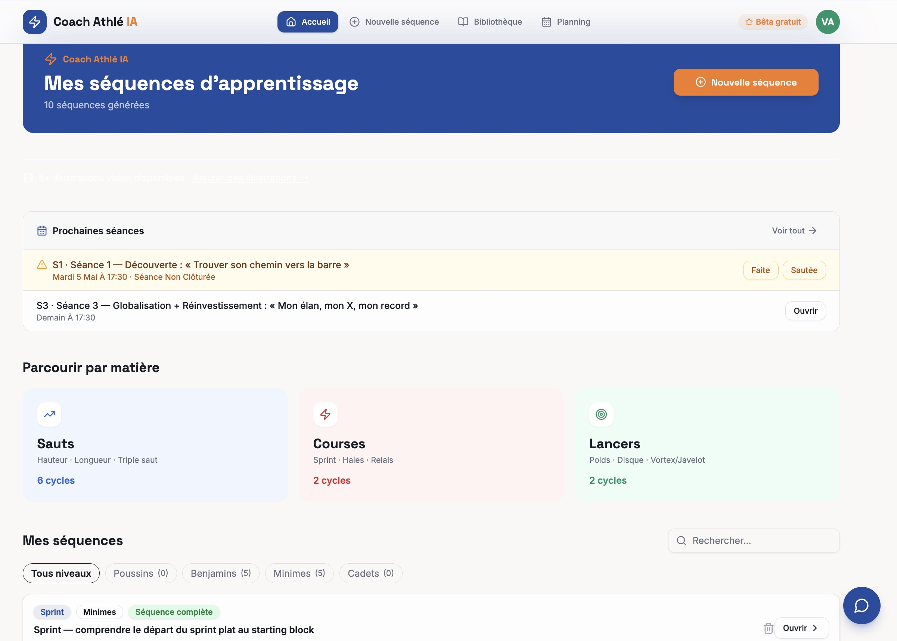
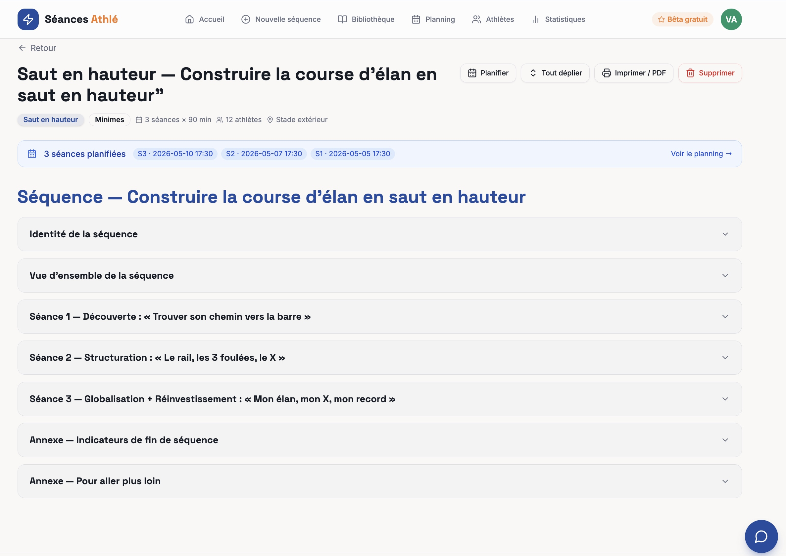
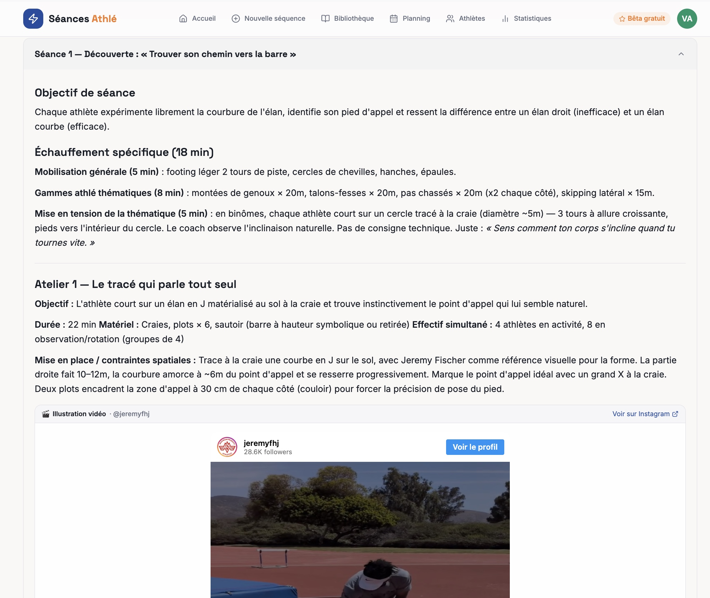
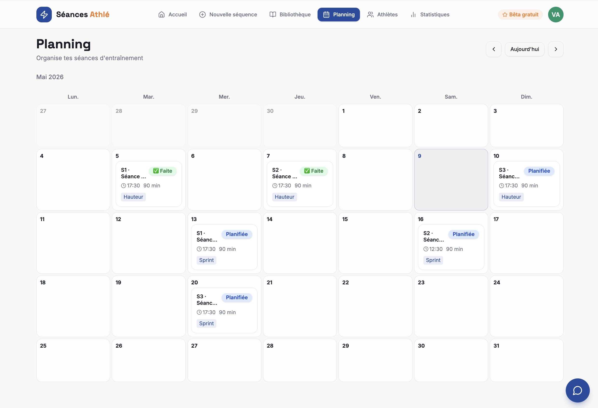
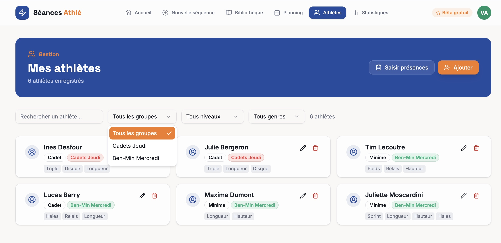
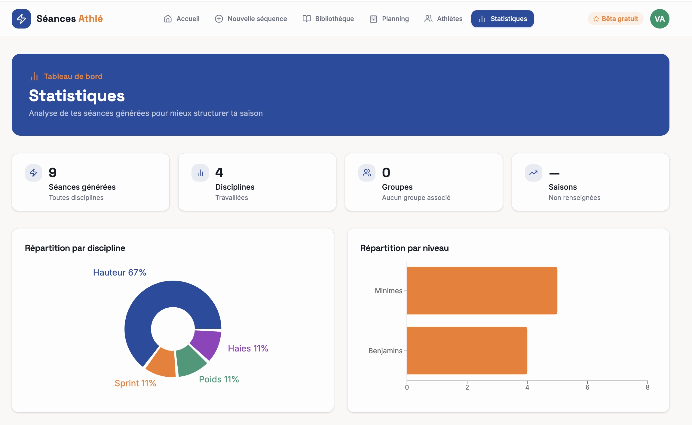
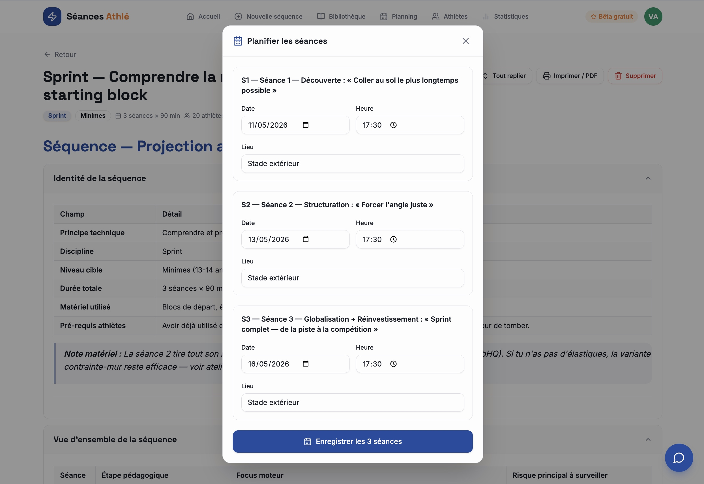

Tu décris ton objectif. L'App recherche dans 280+ exercices vidéo issus des meilleurs entraîneurs mondiaux. Elle structure ta séance dans une logique pédagogique FFA. Toi, tu coaches.

Génération, planification, suivi des athlètes, statistiques. Pensé pour la saison entière, pas pour une séance isolée.
Chaque cycle généré est structuré en sections dépliables : identité de la séquence, vue d’ensemble pédagogique, puis chaque séance dans l’ordre. Tu vois tout. Tu déplie ce que tu veux.

Objectif clair, échauffement chronométré, ateliers détaillés. Et pour chaque atelier technique, la vidéo Instagram du geste exact à montrer aux athlètes — un tap, c'est ouvert.

Tu planifies tes séances et cycles dans un calendrier mensuel. Statut « faite », « planifiée », « sautée » en un clic.

Fiche par athlète avec catégorie FFA calculée automatiquement, disciplines, groupes. Saisie de présence en un clic.

Répartition de tes séances par discipline et par niveau. Tu repères les disciplines négligées ou survenu, et tu rééquilibres ta saison.

Quand l'App génère un cycle, tu choisis les dates, heures et lieux des séances en une seule modale. Tout part dans le calendrier d'un coup.

Une base que tu mettrais deux ans à constituer toi-même. Enrichie chaque semaine.
Tes séances suivent les 4 étapes officielles de l'apprentissage moteur (découverte, structuration, globalisation, réinvestissement). Sans que tu y penses.
Plus jamais besoin de retourner sur YouTube pour montrer le geste. Un clic, ton athlète voit comment ça se fait.
16 qualités physiques au catalogue FFA. Tu coches une à quatre cases (pliométrie, vitesse, explosivité…), l'App structure la séance autour.
Une seule séance pour bosser un point précis. Ou un cycle progressif de 3 à 5 séances pour structurer un mois. Le mode change au moment de générer.
L'App tient compte du niveau (Poussins → Espoirs) pour ajuster intensité, charges et complexité. Pas d'exercice cadets imposé à des Poussins.
280+ exercices vidéo issus des plus grands entraîneurs internationaux. La base grandit tous les mardis. Tu profites des nouveautés sans rien faire.
60 secondes par séance contre 1h30 en méthode classique. Multiplie par le nombre de séances que tu prépares dans l'année. Voilà ton ROI.
Lisible en plein soleil. Vidéos cliquables au pouce. Sections déroulantes. Optimisé téléphone et tablette pour t'accompagner pendant la séance.
Tu n'es pas un robot, ton groupe non plus. Tu remplaces un exercice, tu rallonges l'échauffement, tu adaptes au feeling du jour. Rien n'est figé.
Parce que sortir une séance de coach, c'est un métier. Voilà ce que tu gagnes vraiment.
| YouTube / Google | ChatGPT seul | Séances Athlé | |
|---|---|---|---|
| Temps pour préparer une séance | ~1h30 | ~15 min | 60 secondes |
| Exercices validés pédagogiquement | Tri à faire toi-même | L'IA invente sans source | 280+ exercices sourcés |
| Vidéo de référence par exercice | Vidéos isolées | Texte uniquement | Cliquable en 1 tap |
| Pédagogie FFA respectée | À toi de la connaître | Si tu sais la prompter | Par défaut |
| Adaptation au niveau (Poussins → Espoirs) | Selon les vidéos trouvées | Aléatoire | Strictement respectée |
| Cycle progressif multi-séances | À structurer à la main | Si tu sais cadrer | En un clic |
| Ciblage qualités physiques | Inexistant | Inexistant | 16 qualités FFA |
| Lisible au bord de la piste | Pas pensé pour | Pas pensé pour | Conçu pour ça |
Tu peux faire avec YouTube ou ChatGPT. Tu peux aussi cuire un plat de chef avec un micro-ondes. Mais bon, peut-être qu'il y a mieux.
14 jours gratuits. Sans carte bancaire. Ta prochaine séance prête en 60 secondes.
Démarrer gratuitement14 jours d'essai. Sans carte bancaire. Annulable à tout moment.
« J'ai gagné 1h30 par semaine sur la prépa. Mes athlètes n'ont jamais autant progressé sur leur technique de lancer. Et c'est pas un coach qui le dit, c'est leurs marques. »
Normal. La plupart des entraîneurs qu'on rencontre disent ça les dix premières secondes. La nuance : l'App ne décide rien à ta place. Elle structure une proposition à partir d'une bibliothèque d'exercices validés par des entraîneurs internationaux. Toi, tu valides, tu modifies, tu coupes ce que tu veux. C'est un assistant, pas un autopilote.
D'une veille rigoureuse menée pendant des mois sur les comptes Instagram d'entraîneurs reconnus internationalement : Henrik Thoms en saut en hauteur, David Storl au poids (double champion du monde), Sean Furey au javelot (double olympien US), Lucas Mathonat en sprint, et 25 autres. Chaque exercice est validé pédagogiquement et tagué par discipline, niveau, étape et qualité physique. Aucun exercice généré « à partir de rien » par l'IA.
Tout est éditable. Tu remplaces un exercice, tu rallonges l'échauffement, tu coupes le retour au calme. Tu adaptes selon le groupe que tu vois arriver à la séance. La séance générée est un point de départ propre, pas une cage.
Au moment de générer, tu choisis « séance unique » (une seule séance autonome qui cible un point précis) ou « cycle progressif » (trois à cinq séances qui s'enchaînent dans une logique pédagogique). Le tarif est le même dans les deux cas.
Non. L'essai gratuit ne te demande même pas ta carte bancaire à l'inscription. Pendant 14 jours, tu utilises tout. Au bout des 14 jours, c'est toi qui décides si tu actives ton abonnement. Aucun prélèvement, aucune mauvaise surprise.
Oui, c'est même conçu pour ça. Tu prépares ta séance sur ordinateur le dimanche soir, tu l'ouvres sur ton téléphone le mardi au stade. Lisible en plein soleil, vidéos cliquables au pouce, sections déroulantes. L'app travaille avec toi pendant la séance, pas contre toi.
On joue franc jeu. La perche est en cours de constitution dans la bibliothèque, c'est le seul vrai trou actuel. Le triple saut, le marteau et le disque sont couverts mais avec moins de profondeur que les autres disciplines. Si tu coaches exclusivement la perche, attends quelques semaines avant de t'abonner.
Depuis ton compte, en un clic. Pas de mail à envoyer, pas de chat à supporter, pas de raisons à donner. Tu paies pour l'utiliser, tu pars quand tu veux.
Mets l'app à l'épreuve pendant 14 jours. Sans carte bancaire. Sans rien à perdre.
Démarrer mes 14 jours
3 étapes. 30 secondes.
Une séance prête à coacher.
Décris ton objectif
L'App structure la séance
Tu coaches